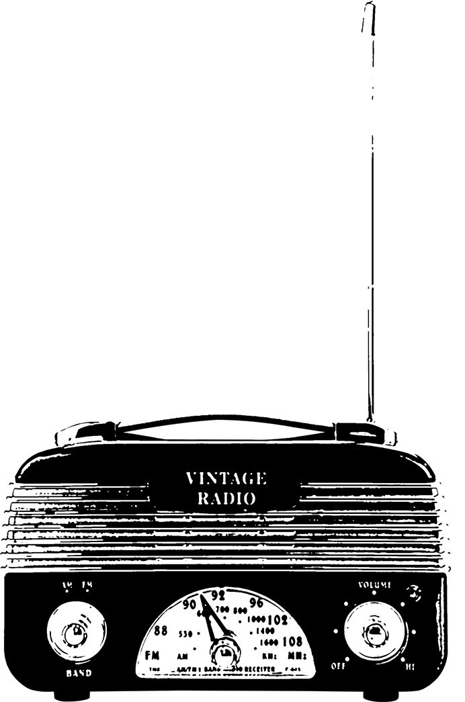

What about a little music break?

What a beautiful instrument... what was it's name? i forgot it.
By the way, you did well on the last puzzle, here is your link:
....
Did you really think i would give it to you like that... HA HA HA HA HA
Well, i am a kind dude, so here is a hint: be a man (or women, we are not sexist here) of cultur and listen to real music.